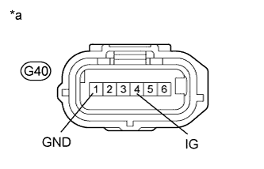

DTC C1232 Acceleration Sensor Stuck Malfunction |
DTC C1243 Acceleration Sensor Stuck Malfunction |
DTC C1245 Acceleration Sensor Output Malfunction |
DTC C1279 Acceleration Sensor Output Voltage Malfunction (Test Mode DTC) |
| DTC Code | DTC Detection Condition | Trouble Area |
| C1232 | At a vehicle speed of 10 km/h (6 mph) or more, the fluctuation range of the signal from one of either GL1 or GL2 is below 80 mV and the fluctuation range of the signal of the other is higher than 1.9 V for 30 seconds or more. |
|
| C1243 | The following condition repeats 16 times.
| |
| C1245 | The following condition continues for at least 60 seconds.
| |
| C1279 | Stored during test mode. |
| 1.CHECK FOR DTC |
Clear the DTCs (Click here).
Turn the engine switch off.
Turn the engine switch on (IG).
Check if DTCs U0073, U0123, C1210 and/or C1336 are output (Click here).
| Result | Proceed to |
| DTC U0073, U0123, C1210 and/or C1336 are not output | A |
| DTC U0073 and/or U0123 are output | B |
| DTC C1210 and/or C1336 are output | C |
|
| ||||
|
| ||||
| A | |
| 2.CHECK YAW RATE AND ACCELERATION SENSOR INSTALLATION |
Check that the yaw rate and acceleration sensor is installed properly.
|
| ||||
| OK | |
| 3.CHECK TERMINAL VOLTAGE AND RESISTANCE (IG, GND) |
Disconnect the G40 yaw rate and acceleration sensor connector.
|  |
Measure the voltage according to the value(s) in the table below.
| Tester Connection | Switch Condition | Specified Condition |
| G40-4 (IG) - Body ground | Engine switch on (IG) | 11 to 14 V |
Measure the resistance according to the value(s) in the table below.
| Tester Connection | Condition | Specified Condition |
| G40-1 (GND) - Body ground | Always | Below 1 Ω |
| *a | Front view of wire harness connector (to Yaw Rate and Acceleration Sensor) |
| Result | Proceed to |
| OK (When troubleshooting in accordance with Diagnostic Trouble Code Chart) | A |
| OK (When troubleshooting in accordance with Problem Symptoms Table) | B |
| NG | C |
|
| ||||
|
| ||||
| A | ||
| ||